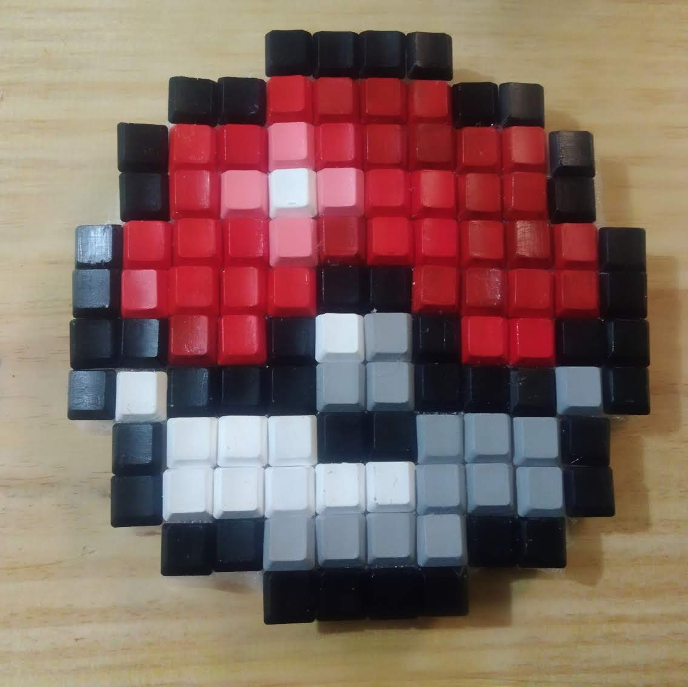
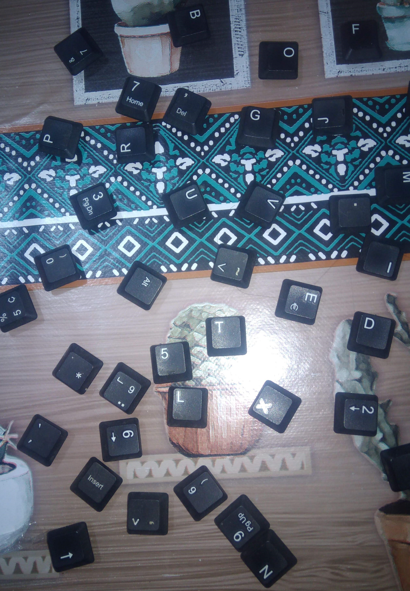
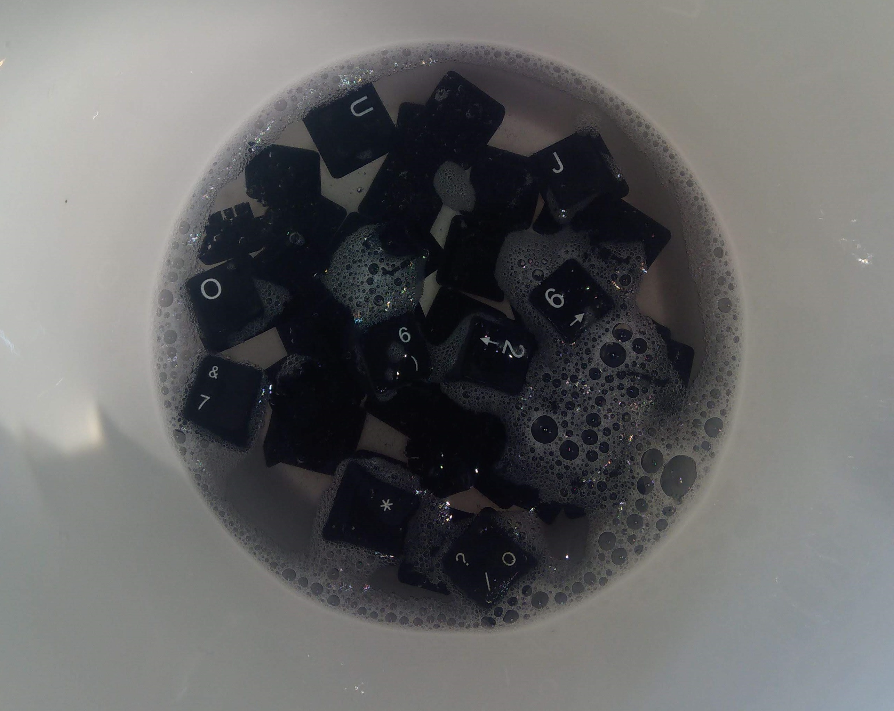
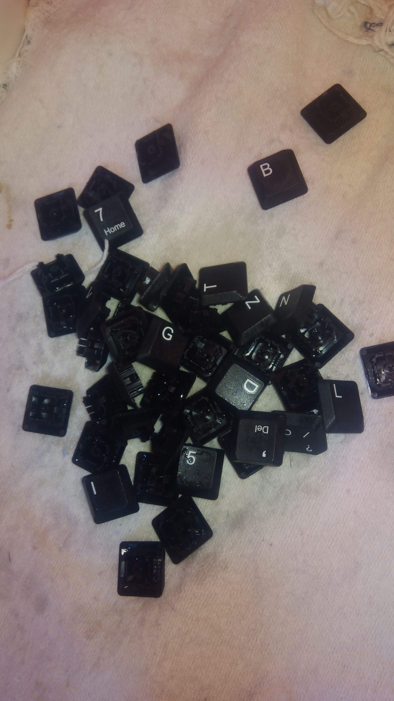
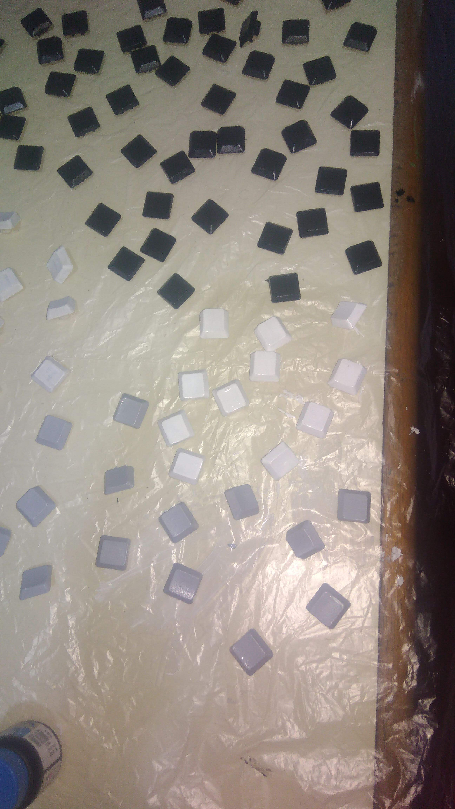
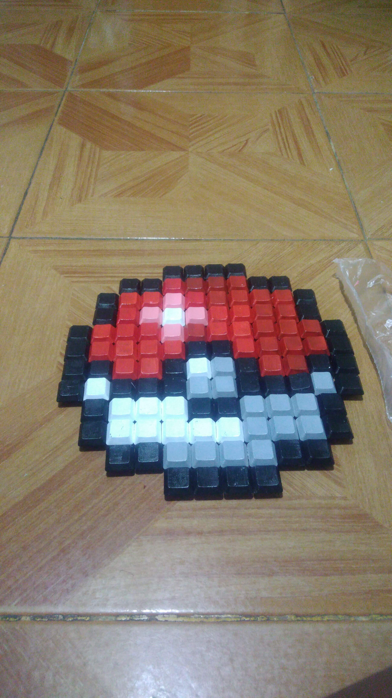
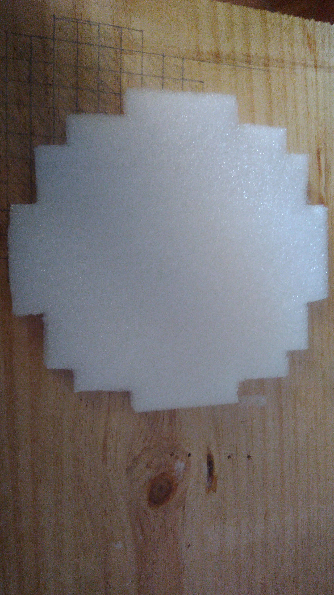
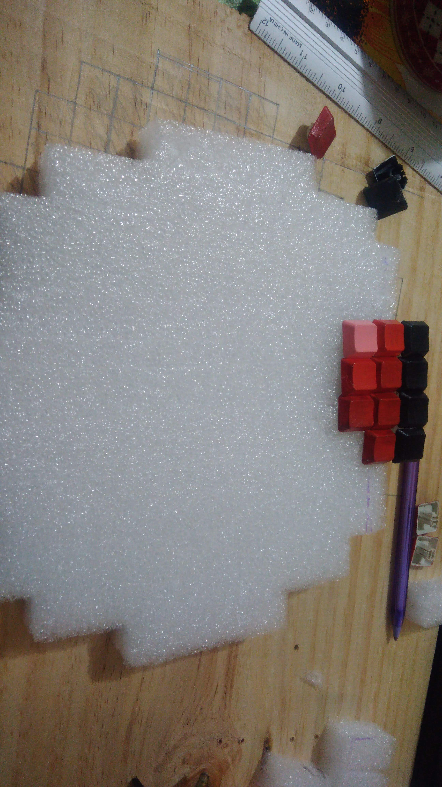

Tutorial Pokebola:

1- Retire as teclas do teclado com o auxílio de uma chave de fenda.

2- Higienize as teclas com água com sabão ou álcool em gel.

3- Seque as teclas e as envolva com uma fina camada de primer para metais, pet e vidro.

4- Pinte as teclas de acordo com o desenho escolhido.

5- Monte uma prévia da figura para verificar se faltam peças e se a proporção está correta.

6- Faça o suporte para as teclas com o formata da figura.

7- Cole as teclas no suporte.
